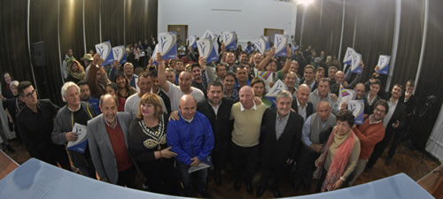
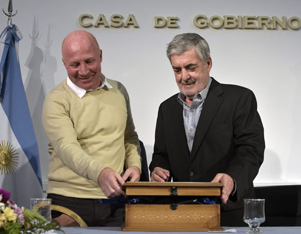

Real Chubut - Agencia de Noticias


Das Neves junto a Mac Allister entregó aportes por 7.500.000 pesos a clubes deportivos de nueve ciudades del Chubut

En total 57 entidades recibieron fondos gestionados por la Provincia a través del Programa Clubes Argentinos.
El gobernador del Chubut, Mario Das Neves, junto al secretario de Deportes de la Nación, Carlos Javier Mac Allister, entregó este jueves aportes por 7.500.000 pesos a un total de 57 clubes deportivos de nueve ciudades de la Provincia, que fueron gestionados ante Nación a través del Programa Clubes Argentinos.
Entidades de Rawson, Cholila, Epuyén, Gaiman, Gobernador Costa, Río Pico, Lago Puelo, Puerto Madryn y Trelew recibieron los fondos en el marco de un acto realizado pasadas las 18,30 horas, ante un colmado Salón de los Constituyentes de la Casa de Gobierno con las presencias de intendentes, legisladores nacionales y provinciales, integrantes del gabinete provincial y representantes de los clubes, entre otros, además del coordinador nacional de Clubes Argentinos, Marcelo Giraudo que llegó a Chubut acompañando a Mac Allister.
Das Neves agradeció la presencia nuevamente en Chubut del secretario de Deportes de la Nación, Carlos Mac Allister y valoró el mensaje brindado por el funcionario nacional señalando que hizo hincapié en “hablar de economías regionales”, además de sostener que “el deportivo es un ámbito especial y plural, tenemos gente de todos los partidos políticos”. También el mandatario destacó el rol de los clubes “de contener a los chicos” y valoró el papel que las entidades tuvieron durante el temporal “fueron solidarios, fueron un lugar y espacio para recibir una familia con problemas, un lugar de acopio, de organización de eventos solidarios, y sobre todo destacar la rapidez de la respuesta de Deportes de Nación”, dijo.
Además el gobernador destacó a los dirigentes deportivos y su compromiso. “Les digo que no los vamos a dejar solos, nunca lo hicimos porque son parte de esta historia y la construimos entre todos”.
Asimismo el gobernador valoró que “un secretario de Deportes de la Nación hable de una inversión de dos años de casi 250 millones de pesos” además de haber recorrido el país “más de 50 veces”.
Aseguró además que “siempre estuvimos convencidos que el deporte es una herramienta fundamental para poder contener a chicos e inculcarle nuevos valores como lo tenemos en todos los clubes de la provincia”.
Todos los clubes beneficiados
Durante el acto, y a través del Programa Clubes Argentinos, las entidades deportivas que recibieron fondos fueron: de Cholila, Club Social, Cultural y Deportivo Manuel Belgrano; de Epuyén, Club Social Deportivo Pirqué Epuyén; de Gobernador Costa, Club Deportivo Juventud Unida; de Lago Puelo, Club Andino Lago Puelo; de Río Pico, Asociación Club Social y Deportivo Río Pico; y de Gaiman, Club Argentino del Sur, Club Camwy Kayac y Gaiman Fútbol Club.
En tanto que por Rawson fueron beneficiados la Asociación Civil Club Rawson Unidos, Asociación de Wushu Chubutense, Asociación de Profesores de la Educación Física, Asociación Myfanuy Humphreys, Bigornia Rugby Club, Centro de Alto Rendimiento del Deporte de Combate y Arte Marciales, Circulo de Ajedrez Rawson - Club Atlético Defensores de la Rivera, Club Atlético Germinal, Club Boxeo Rawson, Club de Pelota a Paleta Don Bosco, Club Deportivo Esperanza Asociación Civil Rawson, Club Regatas Rawson, Club Social y Deportivo Defensores del Parque Infantiles Rawson, Club Social y Deportivo Olímpico y Club Social y Deportivo Roca.
De Trelew recibieron aportes la Asociación Civil Tiro Federal Argentino, Liga de Fútbol Veteranos, Asociación Mar y Valle, Club Atlético Independiente, Club de Ajedrez Capablanca, Club de Escalada Desplome Sur, Club de Pesca, Náutica y Caza Submarina de Trelew, Club Kayaks, Club Social y Deportivo Los Aromos, Club Social y Deportivo Municipal, Club Tenis de Mesa, Paturuzu Rugby Club, Racing Club, Trelew Rugby Club, Aero Club Trelew y Asociación Civil Trelew Tenis Club.
Por último de Puerto Madryn recibieron los aportes el Aero Club Puerto Madryn, Agrupación de Aeromodelistas Puerto Madryn, Asociación Civil El Deporte es Salud, Circulo de Ajedrez Peones del Sur, Club de Equitación Puerto Madryn, Club de Pesca Deportiva El Golfo, Club Hípico y Centro Tradicionalista Puerto Madryn, Club Infantil Los Pitufos, Club Náutico y Atlético Sud, Club Semilleros de Campeones, Club Social y Deportivo Madryn, Madryn Kayak Club Asociación Civil, Puerto Madryn Tenis Club, Club Social y Deportivo JJ Moreno y Club Social y Deportivo Alianza Fontana Oeste.

El mensaje de Mac Allister
El secretario de Deportes de la Nación, Carlos Javier Mac Allister, subrayó “el trabajo que estamos haciendo todos juntos en todo Chubut” y destacó el rol de los dirigentes a quienes les dijo que “no son socios de un Gobierno, sino de un país”.
Agregó que “junto con la provincia intentamos hacer nuestro trabajo, esa labor no tiene nada que ver con los colores políticos, tiene que ver con lo que ustedes hacen todos los días dentro de los clubes y nos dan a nosotros”.
Y sostuvo que “los 24 secretarios de Deporte que tiene el país están trabajando todo el tiempo con nosotros”, insistiendo en que “no miramos los colores políticos ni de ellos ni de los clubes”.
Sobre el Programa Clubes Argentinos dijo que “ya lleva más de 250 millones de pesos otorgados a los clubes del todo país y viene a cubrir una parte muy importante para todos los clubes”. Y subrayó: “nosotros venimos acá a devolverle a las economías regionales lo que las economías regionales le dan a la República Argentina. El país es grande gracias a que todas las provincias han hecho a lo largo de la historia y hacen hoy aportes importantes”.
También en el acto habló el presidente de Chubut Deportes, Walter Ñonquepán. El funcionario dijo que “hay dos situaciones importantes: lo que es una institución deportiva y la solidaridad que tienen los clubes”.
Por eso remarcó que “es fundamental este reconocimiento a los clubes y a los dirigentes deportivos que han asumido retos y realizan proyectos y afloran sus ganas por el club”. También destacó que “los clubes merecen el reconocimiento de toda la provincia” y valoró que “la solidaridad de los clubes en los momentos malos fue inmensa. Todos han sido solidarios, han brindado las instituciones para cobijar a la gente, para armar eventos solidarios e hicieron cosas increíbles en estos momentos donde la provincia estuvo golpeada por el temporal”.
Y para concluir dijo que “los dirigentes son nuestros socios directos de Chubut Deportes, de la Secretaría de Deportes de la Nación y este es un mimo para redoblar la apuesta”.
PUBLICIDAD